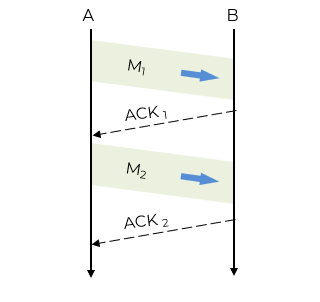
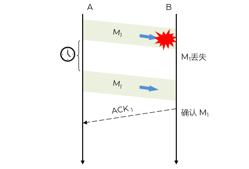
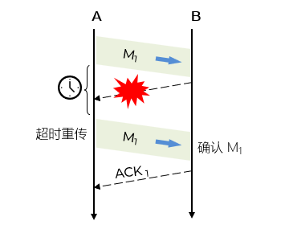
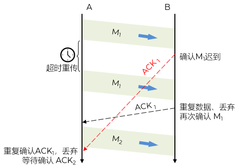
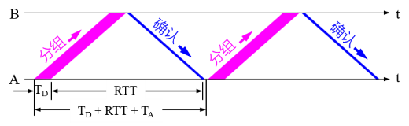

- IP 网络本身提供的是不可靠的传输
- 分组转发 - 网络中各分组无序随机到达
- 可靠需求 Requirement
- 传输信道不产生差错
- 不管发送方以多快的速度发送数据，接收方总是来得及处理收到的数据
- 用于在不可靠信道上实现可靠的数据传输
- 可靠的本质是 确认 和 超时重传
- 序号 Sequence Number + 确认号 Acknowledgment Number：实现数据有序传输和重传机制的重要支撑
- ARQ 不是一种具体协议，而是一个协议框架，包含多种实现方式
- ARQ 最直接的实现方式
- 每发送完一个分组就停止发送，等待对方的确认
- 在收到确认后再发送下一个分组
- A 发送完分组 M1 后就暂停发送，等待 B 的确认
- B 收到 M1 向 A 发送确认
- A 在收到了对 M1 的确认后，就再发送下一个分组 M2
- 如果：B 没有收到 M1 或者收到的 M1 经过检测是错的，那么就丢掉，不发任何消息
- 所以：A 收不到 B 的回复/确认
- A 为每一个已发送的分组设置/维护一个超时计时器 timer
- A 只要在超时计时器到期之前收到了相应的确认，就撤销该超时计时器，继续发送下一个分组 M2
- A 在超时计时器规定时间内没有收到 B 的确认，就认为分组错误或丢失，就重发该分组
- B 所发送的对 M1 的确认丢失了，那么 A 在设定的超时重传时间内将不会收到确认，因此 A 在超时计时器到期后重传 M1
- 假定 B 正确收到了 A 重传的分组 M1。这时 B 应该：
1. 丢弃 Discard 这个重复的分组 M1，不向上层交付，避免重复操作
2. 重新向 A 发送确认，提示 A 可以继续发送下一个分组 - B 对分组 M1 的确认迟到了
- A 在超时计时器到期后重传 M1
- B 会收到重复的 M1，丢弃重复的 M1，并重传确认分组
- A 会收到重复的确认；丢弃 Discard
- 暂存：在发送完一个分组后，发送方必须暂存已发送的分组的副本，以备重发
- 编号：对发送的每个分组和确认都进行编号
- 超时重传：发送方为发送的每个分组设置一个超时计时器。若超时计时器超时没有收到确认，发送方会自动超时重传分组
- 超时计时器的重传时间应当比数据在分组传输的平均往返时间 RTT 更长一些，防止不必要的重传
- 简单，但信道利用率太低
- 发送分组必须要等待确认
- 实际使用信道的时间较少
- TD：数据的发送时延
- TA：数据的处理时延
- RTT：往返时延
- U = TD/( TD + RTT + TA)
- 流水线传输：在收到确认之前，发送方 连续 发出多个分组
- 由于信道上一直有数据不间断地传送，流水线传输可获得 较高 的信道利用率
- 接收方通常只确认按序到达的 最高序号 分组
- 为了保证通信的有效性，发送方不能无限制的发送
- 使用窗口来限制发送方的发送
- 重传策略
- 回退N步 Go-Back-N：若某个分组出错或超时，发送方重传该分组及其之后所有已发送但未确认的分组
- 选择重传 Selective Repeat：只重传出错的分组，其余正确接收的分组被缓存。这需要更大的接收缓冲区和更复杂的管理
实际应用中，可靠传输协议要复杂的多





一个信道的数据传输率为4kb/s，单向传播时延为30ms，如果使停止-等待协议的信道最大利用率达到80%，要求的数据帧长度至少为多少比特？
答：
根据题意 0.8 = TD/(TD + 2×30ms)
TD = 240ms
数据帧长度 L = 240ms×4kbps = 960bits
深度思考：80%的效率是不是很高